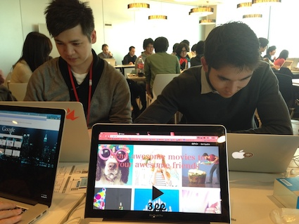

こんにちは。皆様お元気ですか？
皆様はお元気でしょうか。
この度私は、
「Photo Hack Day Japan」というハッカソンに参加をいたしました。
このWEBサイトを作った時のこともブログにしたいのですが、
忘れないために先にこの週末のことを書きたいと思います。

「ハッカソン」とは何かというと、「Hack」＋「marathon」を組み合わせた言葉でして
技術者が集い、限られた短い時間の中で、
ひとつのサービスをつくりピッチを行うまでのイベントのことを言います。
今回のイベント
スマホ向けに写真編集サービスを提供している
米Aviary社による主催でして、
写真に関するAPIを利用し、２日間で写真アプリを開発するといった内容でした。
私はプランニングとフロントのデザイン、キャッチコピーとプレゼンを担当しました。
チームであるしょうへいさんは
バックエンド全般と各種APIの繋ぎの部分を担当して下さり
なんとか「3pp（スリップ）」というWEBサービスをつくりました。
どんなサービスかを簡単に説明しますと、
まず私たちはEyeEmというアプリのAPIを使用しました。
それはユーザーがEyeEmにアップした写真たちと
それにひもづけをした人物と位置情報から
誰とどこにいたといったデータを引っ張りだし、
動画に編集し、Facebook Messangerで相手に送ることが出来るといったサービスです。
「3pp(スリップ)」の意味は、三回のみ再生が限定されているという意味です。
例えば今ではたくさん増えたFacebookフレンドの誕生日にただ、
「Happy Bday;)」と、コメントを書くだけのことが多くなってきました。
その方と過ごした思い出の写真たちを、気軽にムービーにして送ることが出来たら
相手の方も喜ぶのではないか、といった発想から生まれたサービスでした。
EyeEmというアプリを使用した理由は、
その奇麗なデザインに魅了されたからです。
フォトムービーを使用したのは
今動画のサービスが増えて来ていて面白そうだったのと、
再生回数を限定したのもSnapchatからヒントを得ました。
２日間のハッカソンに参加してみて感じたことはやはり、
まだまだ自分の技術が足りず至らない点ばかりだということに尽きるでしょう。
何と私は一ヶ月半ほど前にプログラミングとデザインを勉強し始めたばかりでしたので（笑）
しょうへいさんには諸々のご迷惑をお掛けしたことと存じますが、
「度胸があるね。（笑）」という
しょうへいさんのお言葉のおかげで、
あるいは図太い私の性格のためか、
本当にエキサイティングで学びの多い機会となりました。（笑）
APIスポンサーの方からも応援頂き、心強かったです。
Candidates present their work #PHDJapan
pic.twitter.com/mRjoZQKhVD
— nicolas loeillot (@nikoroe)
2014, 2月 23
また幸いなことに、EyeEm社のゲンさんよりAPI賞を頂く結果となりました。
RT @perop_en: Won the API Prize with my pre co-worker yesterday!
thanks to
@EyeEm
@Aviary &
@PhotoHackJapan
arigato :)
— GEN SADAKANE (@SadaKane_Gen)
2014, 2月 25
参加者にはアメリカ人やインド人、韓国人も多くいて
ジャッジメントやスポンサーの方も含めると
会場の半分以上は英語を話す人で占められていました。
当イベントのためにニューヨークやサンフランシスコ、ドイツから
多くの方がいらっしゃっていて
どの方も素敵で、本当に優秀な方ばかりで
刺激も多かったので、
今回この場に参加させて頂いたことに心より感謝し申し上げます。
今回同じテーブルWorkした仲間で、
「一緒にチームを組もう。」と声をかけてくれた
大学の友人であるAntonyとBenjaminの二人の作品はなんと、
二位とAviary社のAPI賞に選ばれました。
この写真アプリの完成度の高さには会場も驚きでした。
本当におめでとう！
Google playからDLが出来ますので、
Androidをお持ちの方は是非こちらもご覧ください。
ところで神経が図太いって良いことですよね。（笑）
私のことをよく知る方ならばなおさらのことですが、
私はプランニングやマーケティングの経験がちょっとある程度で
サービスの設計をこの２日間で考え実行することなど
今までの自分には考えられないことです。
でも失敗の先にしか成長がないのであれば、
今は挑戦をして失敗をすることよりも、始めから挑戦しないことの方が恐ろしく感じます。
ゼロからの協力をして下さったエンジニアのしょうへいさん、
私にたくさんの刺激を与えてくれたAntonyとBenjamin、
会場を提供して下さったmixiの主催者様、
APIを提供して下さったEyeEm社のゲンさん、
そしてこのイベントを教えてくれた
米Aviary社のCEO Tobias PeggsさんとArchie Archibong、
本当にありがとうございました。
日本語でブログを書いていながらも、日本語を読まれない方もいらっしゃるので
本当は英語で書くべきなのではと悩んでおります。（笑）
春は毎年、出会いと別れが多い季節であり、
また新社会人として新たな門出を迎える人も多くいらっしゃることと思います。
そんな春にワクワクと期待を持ちつつも、
今月もまた引き続き忙しい３月になりそうです。
Thank you♥︎ Mai